~14 Remove a Logo in DaVinci Resolve Using Masking and Tracking~
8/31/2026
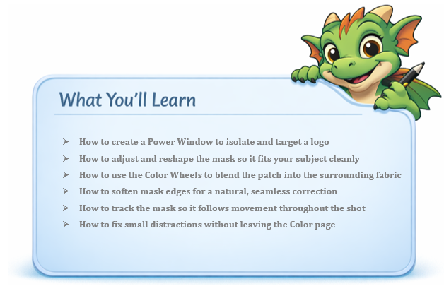
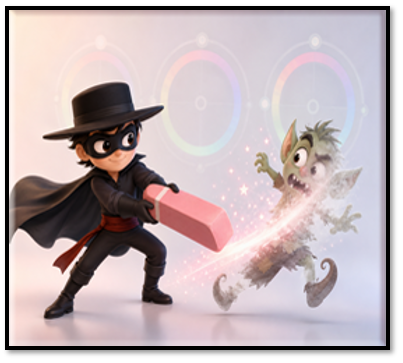
In Davinci
Masking in the Color panel lets you fix distractions without leaving the Color page.
Bring something onto the timeline that you want to mask. In other words, we are trying to remove an unwanted obstacle from our image. It could be a street sign, or it could in my case be the removal of a logo from a man’s shirt. As you can see this logo is a mangled mess.
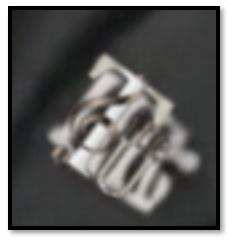
Go to the Color panel
Find the Power Window tab. Grab the Rectangle tool
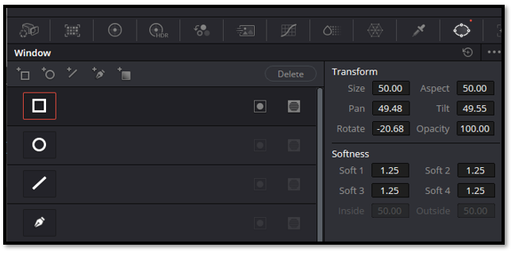
It might come in way too big and you will need to resize it. And you will probably need to zoom out to find the corners of your box. Resize it to fit the logo.
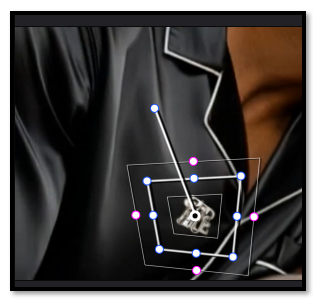
Look at your node to see if your Power window is being shown in the node. If you do not see our specified shape in the node. It did not take. Try redoing it. In our case, it is quite small, but it is there.
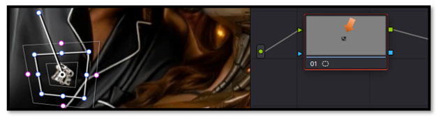
Now with it targeting just this area, we should get the setting that we change with the color wheel to only affect this area.
To get to the Color Wheels, click on this button
Black fabric often needs a slight lift in shadows, and a cooler temperature to blend patches naturally.
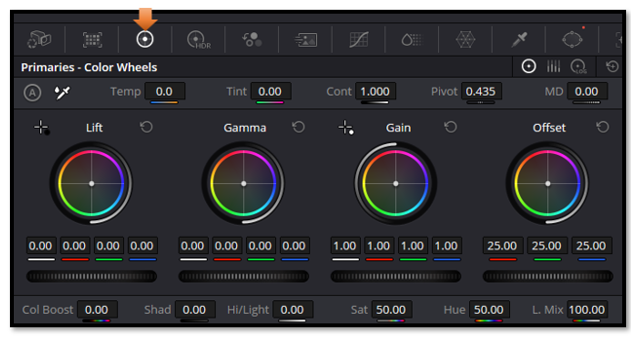
You will want to move these color wheels, to match or cover up something that needs to be covered. In our instance, we wanted to remove a logo, and turn the logo to match the color of the shirt. If this is a problem, you can also add a patch of color in a clip on the timeline above this clip. And use that to cover up the trade mark.
Change the setting to be this, for the black shirt.
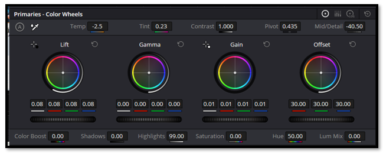
Gain: 0.01
Offset: 30:00
Lift: 0.08
Temp: -2.5
Tint: 0.23
MD: -40.50
Of course, for your own image, you will just have to play around until you get something that you like. This just happened to work for the black satin shirt. The color of your own element might be entirely different.
Softening
If you find that your edges are still too strong, you might want to soften them. Go back to the edit page, so we can view the shirt without the Power window
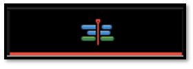
We can certainly see where we patched things up at.
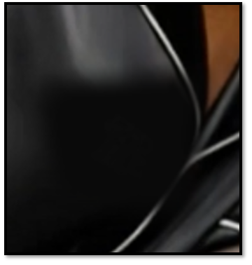
Softness feathers the edges of your mask so the correction blends into the fabric instead of sitting on top of it.”
To soften, we actually need to go to the Power Window tab. By Default, we have 1.25 for each one.
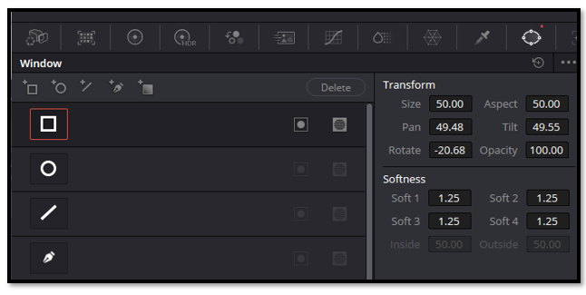
Let’s change each one to 3.00, and see what we get. You do not want to go too far or the logo will be visible. We want to find the sweet spot.
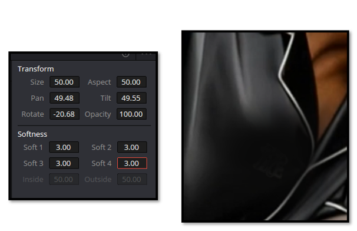
Tracker
The color panel has its own tracker. As the movie plays, it should track and move with the area that you have targeted with the Power window.
You will need to hit this button here on the color page, to be able to get to the tools used to track something.
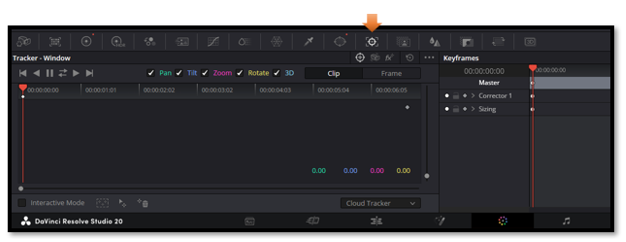
First hit the Tracker button at the top of this window to op
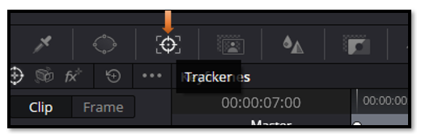
Then hit the track forward button here.
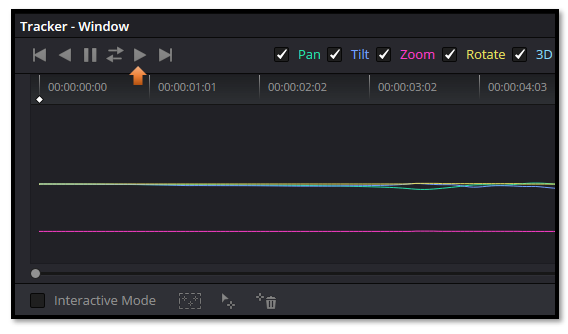
As the movie plays it will track the logo throughout any movements that is made. This means that no matter how the man moves in the clip, the tracker will automatically keep the power window covering this logo area, and keep the logo completely covered with the color that we used to mask the emblem.
Warning- If the tracker loses the logo, stop playback, reposition the mask, and continue tracking from that frame.
The Other Tracking Buttons
You will notice that we have other options that we can use besides the Track forward button that we did.
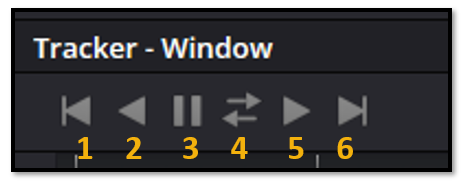
- Track one Frame Reverse (more control tracking one frame at a time)
- Track Reverse
- Stop Tracking
- Track Forward and Reverse
- Track Forward
- Track one Frame Forward
And that’s it — you’ve successfully removed a logo using nothing more than a Power Window, a little softness, and Resolve’s built‑in tracker. Once you get comfortable with these tools, you’ll be able to fix all kinds of small distractions in your footage. Keep experimenting, keep adjusting, and you’ll be amazed at how seamless your edits start to look.